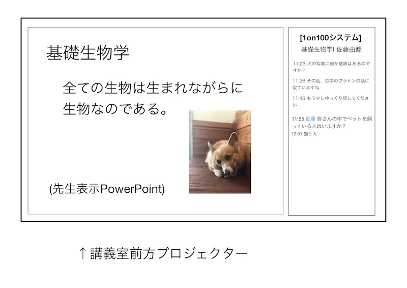
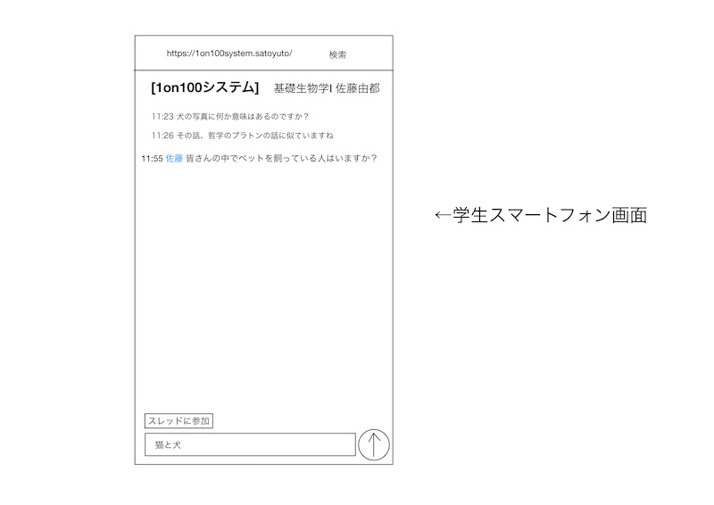

・この半年間に聴覚障害者の方との関わりや調査の結果から、会話でのコミュニケーションの返答が自発的にできないことが主な原因として、聴覚障害者と健常者の間での問題になっている事がわかった。
・神奈川大学の講義中では、聴覚障害者1人につき”ノートテイカー”と呼ばれる方が1人付き、情報保障を行なっている。が、如何せん1人で情報保障を行うので負担が大きく、またノートテイカーもアルバイトという区分であることから必ず全ての授業にノートテイカーが付けれる訳でもないのが現状である。
・このインターフェイスを用いることによって、聴覚障害者の学生は講義を受ける際にノートテイカーに依存しなくとも、講義を受ける事が可能になり、またノートテイカーの負担も軽減する事ができる。
・同時に大教室で行う講義にて、先生と学生の間でお互いのレスポンスを取る際のツールとして用いることによって、先生と学生の距離感を近づける事が可能である。
・このシステムは全てインターネット上で動作する。(アプリケーションではない)
・先生側が部屋を作り、学生側は部屋に入る形である。
・学生側はSNSのように先生への質問や要望を自由に送る事ができる。
・先生側は受け付けたい質問のスレッドを作成が可能である。
・全ての履歴はアーカイブとして残り、授業に出席できなかった学生も閲覧可能である。
・学生のIN時に学生番号を入力させる。これによって先生の問題に対しての答えが素晴らしかった場合に加点をする事ができる。(紙を配り講義終了後に回収と言った手間が無くなる)


・聴覚障害者の学生はUDトーク( https://udtalk.jp)を所持しており、専用のマイクを先生の首元に着けさせることによって手元のIOSデバイスで正確な自動音声入力が確認することができている。これにプラスアルファとして1on100システムを併用することで、話すのが早く上手く自動入力されなかった部分を、もう一度復唱お願いしますと言ったアクションで聞きなおす事ができる。
・ノートテイカーが必ず必要かつ、一人当たりの負担を軽減する事が可能である。
・一般学生と先生にとっても有効で、大きい講堂での授業では学生側は質問をしにくく、先生側は問題の答えや考察を聞きたいときに学生が誰も挙手せずに授業が展開でいないと言った問題点があるが、このシステムを用いることによって全く新しい授業展開が可能である。
①試験運用(9月中)
・ゼミにて実際に使用できるかテストする。
(発表終了後の使用ではなく、発表中の質問などの使用を想定。例：声が小さい、動画長い)
②道用先生の講義にて運用(11月中)
・大変申し訳ないですが、お時間と多少の講義展開方法の変更が必要かと思われます。ご協力お願いいたします。
③道用先生の講義にて運用した後のアンケート
・数回の講義にて運用した結果の、聴覚障害者への使った感想、ノートテイカーへの負担が軽減したかの感想、一般学生の使用前後での講義の感想、先生への講義展開のやり易さと使用前後の感想
④道用先生以外の先生の講義での運用
・今プロジェクトの関係者の居ない場所ではどのような結果や感想が出るかを調査
⑤平塚教務課へのご提案(2月までに)
・このシステムを神大専用のシステムに認めてもらい、様々な先生が講義にて導入